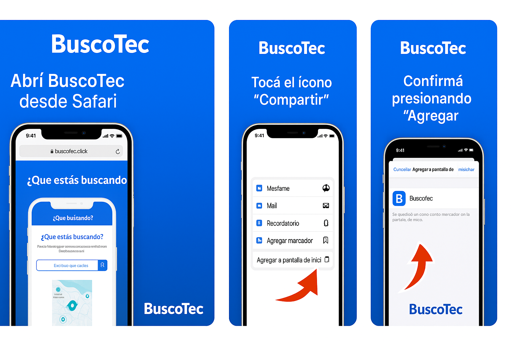

⚠️ Es muy importante instalar la App para recibir notificaciones y acceder a todos los servicios.

Ingresá la dirección https://buscotec.click directamente desde Safari. Luego seguí las instrucciones que aparecen en la pantalla para agregar la app a tu inicio.